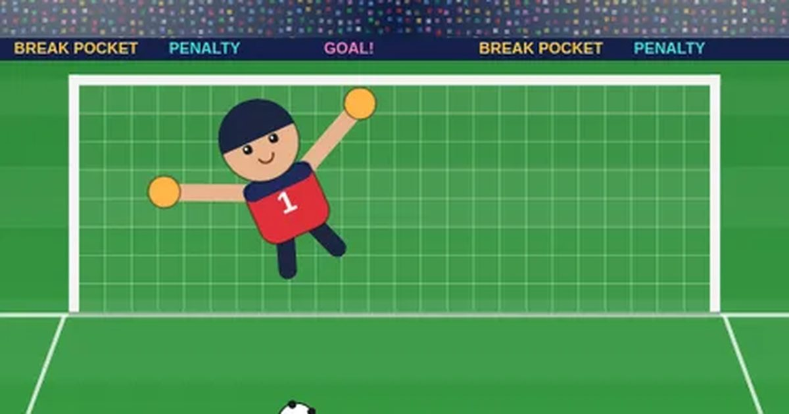

승부차기
Penalty Shootout
축구 · 연속 기록무료설치 없음폰 · PC
▶ 지금 바로 하기로그인 없이 브라우저에서 바로 시작돼요
어떤 게임인가요?
골문 구석구석을 노려 차고, 날아오는 공을 보고 몸을 날려 막으세요. 한 번도 안 놓치고 몇 번까지 이어 갈 수 있을까? 성공할수록 골키퍼와 키커가 강해져요.
목표 · 계속 차기: 골키퍼가 막을 때까지 계속 차서 연속 골 기록 세우기 (빗나감 · 골대는 3번까지 봐줘요) · 골마다 골키퍼가 더 날카로워져요 · 끝없이: 차기 · 막기를 번갈아 한 번도 안 놓치고 몇 번까지 이어 갈 수 있을까? · 대결: 5번씩 번갈아 차서 골을 더 많이 넣으면 승리 (동점이면 서든데스).
게임 방법
- 찰 때: 골문을 눌러 노릴 곳을 정하고, 아래를 누르고 있다가 힘 게이지가 초록 칸일 때 떼세요. 구석일수록 막기 어렵지만 빗나가기 쉬워요. 빨간 칸에서 떼면 넘어가거나 약해져요.
- 막을 때: 공이 날아오는 바로 그 지점을 골문에서 누르면 골키퍼가 몸을 날려요.
- 선수단 8명: 선수마다 킥력(공 속도)과 정확도가 달라요. 🔄 버튼으로 언제든 교체! 같은 선수가 계속 차면 체력이 떨어져 정확도가 나빠지고, 쉬는 선수는 체력이 회복돼요.
- 골을 넣을수록(누적) 새 선수가 합류해요: 바람 서아(10골) · 강철 도윤(25골) · 마술사 하린(45골) · 불꽃 지후(70골) · 황금발 루카(100골).
- 🔥 불꽃슛: 골을 넣으면 +34%, 선방하면 +50% 게이지가 차요. 가득 차면 불꽃슛 버튼을 켜고 차세요. 아주 빠르고, 골키퍼 손에 맞아도 절반은 뚫고 들어가요. 상대 CPU도 가끔 불꽃슛을 써요!
- 🌐 온라인 승부차기: 모르는 사람과 빠른 매칭하거나 방 코드로 친구와. 차는 쪽이 슛을 하는 동안 막는 쪽은 막을 곳을 상대 몰래 골라요.
등장하는 것들
- ✓ · 골 성공
- ✕ · 실축 · 선방 · 골대
- 초록 칸 · 정확한 킥
- 🔥 불꽃슛 · 빠르고 강력 · 절반은 손을 뚫음
- 체력 막대 · 낮으면 정확도 ↓ · 교체해서 쉬게
공략 팁
- 낮게 구석으로 차면 가장 안전해요.
- 정확도 높은 선수로 구석을, 킥력 센 선수로 정면 강슛을!
- 체력이 반 아래로 떨어지면 바로 교체하세요.
- 불꽃슛은 지고 있을 때나 서든데스 결정타로 아껴 두세요.
 구름 점프
구름 점프 솔리테어
솔리테어 추억의 핀볼
추억의 핀볼 막대 파이터
막대 파이터 골목 대장
골목 대장 무당벌레 미로
무당벌레 미로